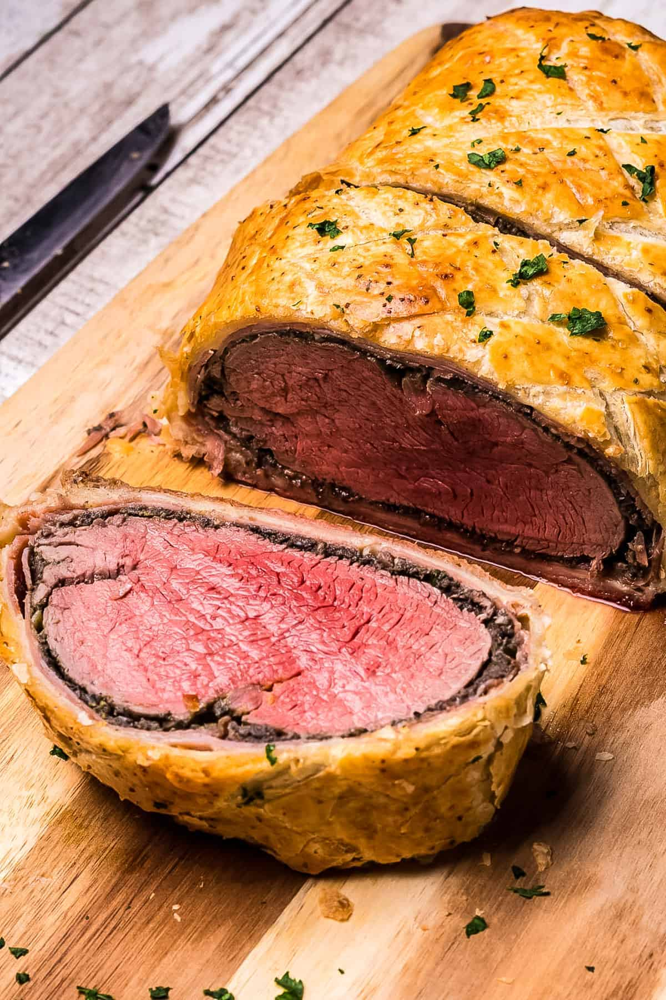

Beef Wellington

Description:
Beef Wellington is a classic and elegant dish that is sure to impress your guests. This show-stopping main course features a beef tenderloin that is coated with a layer of rich pâté and wrapped in flaky puff pastry. The dish is then baked to perfection, resulting in a tender and juicy beef tenderloin that is surrounded by a crispy and golden brown crust. If you're looking for a show-stopping main course that is sure to impress your guests, Beef Wellington is the perfect choice. With its rich flavor and elegant presentation, it's a classic dish that will never go out of style.
Ingredients:
- 1 (3-pound) beef tenderloin, trimmed
- Salt and freshly ground black pepper
- 2 tablespoons olive oil
- 1/2 cup chopped shallots
- 2 cloves garlic, minced
- 8 ounces mushrooms, finely chopped
- 3 tablespoons unsalted butter
- 1/4 cup dry white wine
- 1/4 cup chopped fresh parsley
- 2 tablespoons Dijon mustard
- 1 sheet frozen puff pastry (thawed)
- 1 large egg, beaten
- Flour for dusting
Steps:
- Preheat the oven to 425°F.
- Season the beef tenderloin generously with salt and black pepper.
- In a large skillet, heat the olive oil over high heat. Add the beef and sear it on all sides until well browned, about 3-4 minutes per side. Transfer the beef to a plate and set aside.
- In the same skillet, add the shallots and garlic, and sauté for 2 minutes until soft. Add the chopped mushrooms and butter, and cook for 5-7 minutes until the mushrooms are tender and the liquid has evaporated. Stir in the white wine and parsley, and cook for another 2-3 minutes until the mixture is thickened.
- On a lightly floured surface, roll out the puff pastry to a thickness of about 1/4 inch. Spread the Dijon mustard over the puff pastry.
- Spread the mushroom mixture evenly over the puff pastry, leaving a border of about 1 inch around the edges.
- Place the seared beef tenderloin in the center of the puff pastry. Roll the pastry around the beef, sealing the edges by pressing them together. Trim off any excess pastry.
- Brush the beaten egg over the top of the pastry.
- Transfer the Beef Wellington to a baking sheet lined with parchment paper.
- Bake for 35-40 minutes, until the pastry is golden brown and crispy, and the beef is cooked to medium rare.
- Remove the Beef Wellington from the oven and let it rest for 10 minutes before slicing and serving.
Go back to the main menu!